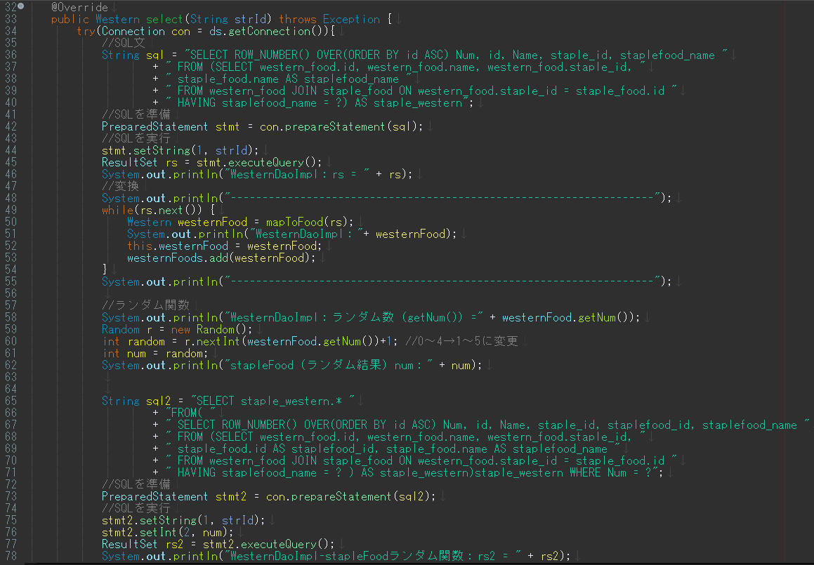

制作実績
2023年12月現在、webシステムの開発を行っております。
WhatDoYouEatToday? 今日何食べる？
このwebシステムは今日あなたが食べたいものを診断し、提案します。
材料からレシピを検索してくれるサイトや、食べたいものからお店を検索してくれるサイトを利用している方も多いのではないでしょうか。
しかし、「食べるもの」を提案してくれるサイトはあまり見かけません。
「食事のレパートリーが不足していて食べたいものが思い浮かばない」「いつもとは違うものが食べたい！」
そんな気持ちになったことはありませんか？
このアプリは、ボタンを選択していくだけであなたの希望に沿ったメニューを提案してくれます。
「何を食べたいのか自分でも分からない・・・！」そう思ったときは診断機能を使ってみてください。
使用技術
- Java
- MySQL
- Git/GitHub
機能一覧
- ユーザー情報（登録機能、更新機能）
- ユーザー詳細表示機能
- ログイン機能
- ログアウト機能
- 診断機能
- レシピ一覧表示機能
- お気に入り（登録機能、表示機能）
今後実装予定
- API（レシピ検索、お店検索）
- サイトデザイン（CSS、JavaScript）
- お気に入り削除機能
苦労した点
SQL文に苦戦し、Qiitaなどのサイトで調べながら作成しました。
試行錯誤を繰り返している中でSQLの面白さに気づくことができたため、今後も積極的にSQLを活用しながら学習を進めたいと思います。
特に苦戦したこと
テーブル結合したものに「ROW_NUMBER()」で連番を付与を付与し、ランダム関数の結果と一致する番号のカラムを取得
「WesternDaoImpl.java」の select(String strId) メソッド

画像をクリックすると拡大し、再度画像をクリックすると縮小します
ER図
今後記載予定